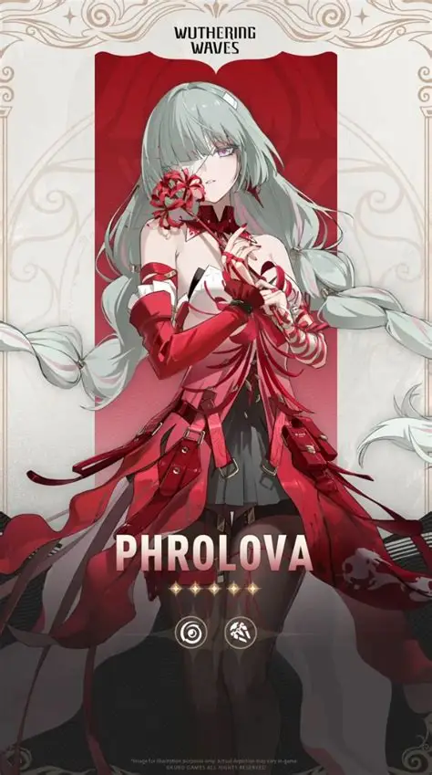
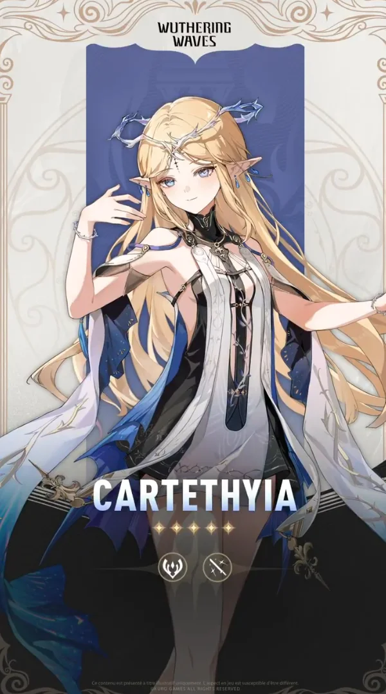
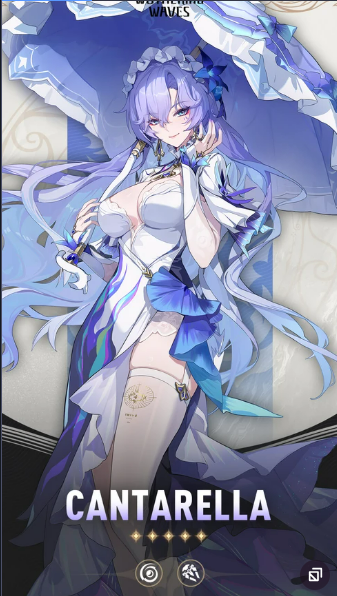

Setelah kejadian di Black Shores, Rover masih mencari tahu tentang Abby, makhluk kecil yang sekarang menjadi pendampingnya. Kondisi Abby ternyata tidak stabil. Frekuensinya mulai melemah, dan Shorekeeper menduga jawabannya mungkin ada di Rinascita, negeri yang terkenal dengan teknologi Echo dan hubungan mereka dengan Sentinel bernama Imperator.
| Character | Role in Story | Affiliation |
|---|---|---|
|
Phrolova
 |
Overseer / one of Fractsidus' key executives | Fractsidus |
|
Cartethyia
 |
The Blessed Maiden and the Imperator's Resonator. | Order of the Deep / Imperator |
|
Cantarella
 |
The 36th matriarch of the Fisalia family. | Fisalia Family |
Rover tiba di kota utama Rinascita, Ragunna. Rinascita sangat berbeda dengan Jinzhou. Jinzhou terasa seperti negara yang sedang bertahan hidup dari Lament. Rinascita justru tampak seperti tempat yang makmur, penuh seni, musik, festival, Echo, dan budaya. Masyarakat Rinascita sangat menghormati Sentinel mereka: Imperator. Mereka percaya bahwa Echo adalah semacam berkat dari Sentinel. Masalahnya? Imperator sudah lama tidak memberikan oracle atau petunjuk. Namun masyarakat tetap percaya kepada agama dan struktur yang dibangun atas nama Imperator.